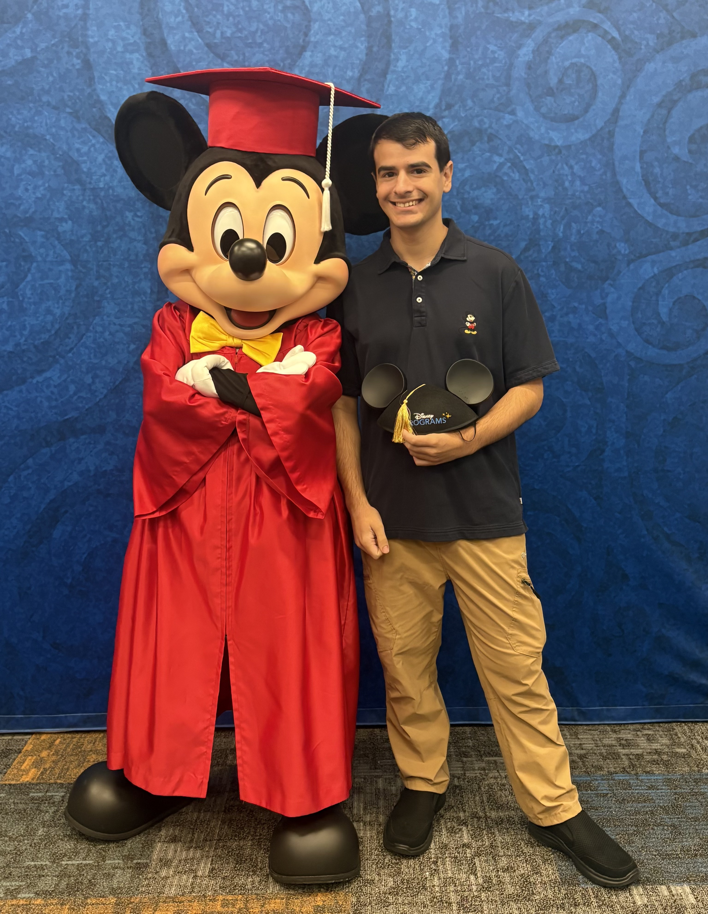
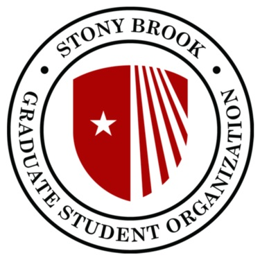
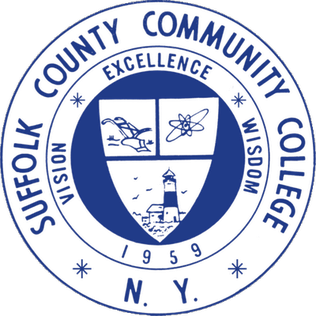
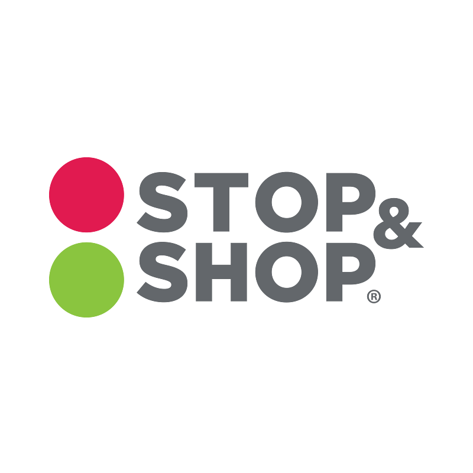
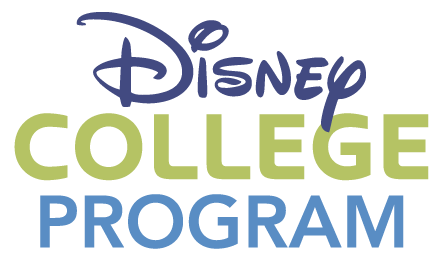
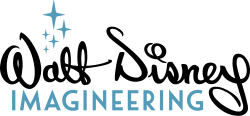
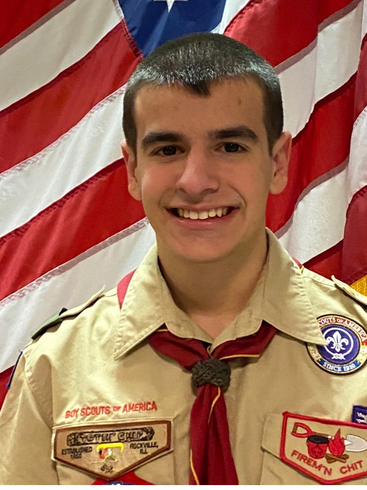

I'm a Computer Science graduate from Stony Brook University with a passion for problem-solving, technology, and finding creative solutions to challenges. Through my education, I've developed a strong foundation in programming, software development, and working with a variety of technologies. My experiences at Walt Disney World through the Disney College Program, Stop & Shop, and as an administrative assistant have helped me build strong communication, teamwork, and time management skills. Earning the rank of Eagle Scout has also shaped my leadership abilities and work ethic. I enjoy learning new things, taking on challenges, and working with others, and I'm excited to bring both my technical knowledge and people skills to a team where I can continue to grow and make a meaningful contribution.
More DetailJava
HTML
CSS
Javascript
C
Python
MIPS Assembly

Major: Computer Science
GPA: 3.41

Major: Computer Science
GPA: 3.8

2021 -- Present

January -- August 2026
2021 -- 2025

April 2026
Participating in Disney's Tech Behind the Dreams experience gave me a unique opportunity to explore the technology, creativity, and engineering that bring Disney attractions to life. One of the highlights was learning how Disney operates behind the scenes and speaking directly with Imagineers about their work and the challenges they face. Through a hands-on team project, we designed a mock section of a theme park, making decisions about everything from creative design and technical needs to budgeting and purchasing. I enjoyed seeing how different teams and departments work together to turn an idea into a real guest experience. As a Computer Science graduate, this experience helped me see how my technical background and love of problem-solving could be applied beyond traditional software development. It reinforced my interest in pursuing a career where I can combine technology, creativity, and collaboration to develop innovative solutions that make a meaningful impact.

August 27, 2019
One of my proudest accomplishments is earning the rank of Eagle Scout with Troop 354 in Port Jefferson Station, NY. As the highest rank in Scouting America, earning Eagle Scout represents years of dedication, leadership, community service, and perseverance. My Eagle Scout project was especially meaningful because it allowed me to make a difference for students in the special education Life Skills program at my high school. Many of these students faced physical disabilities and visual perception challenges that made participating in traditional physical education classes difficult. My goal was to help create opportunities for them to enjoy physical activity in a setting better suited to their needs. I organized a large spaghetti dinner fundraiser, secured donated raffle prizes, and raised $4,000 to purchase adaptive physical education equipment. I then worked alongside the Life Skills students to assemble the equipment they would use. This project was about more than earning a rank. It taught me how to take an idea, develop a plan, bring people together, and make a meaningful impact. The leadership, organization, and problem-solving skills I gained are lessons I continue to carry into my professional life.